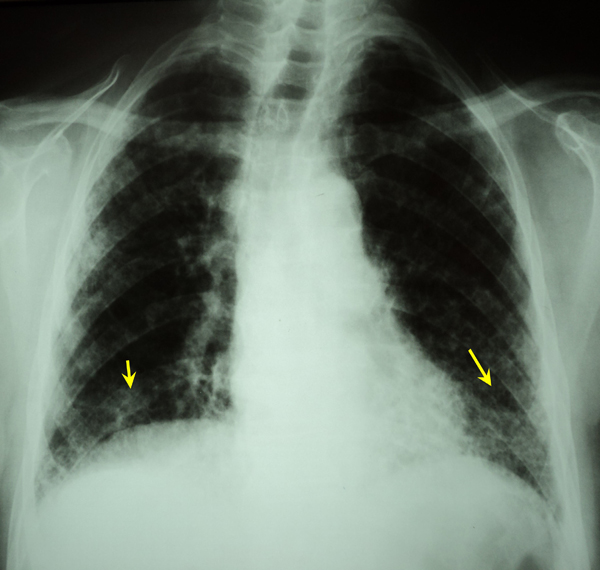

Réponses cas clinique N°39
1- La radiographie thoracique de face objective des opacités réticulaires et micronodulaires diffuses aux deux champs pulmonaires prédominantes au niveau basithoracique (flèches) : aspect de miliaire.
2- Devant l’âge avancé, l'altération de l’état général et l'aspect de miliaire à la radiographie on suspecte une lymphangite carcinomateuse métastatique, une hémopathie maligne ou une miliaire tuberculeuse.
3- Devant la présence de BK dans les expectorations on retient le diagnostic de miliaire tuberculeuse et donc il faut chercher un terrain favorisant notamment un traitement immunosuppresseur, un surmenage, une infection à VIH, un diabète…, et faire un examen clinique minutieux à la recherche d'autres localisations: aires ganglionnaires, séreuses (plèvre, péricarde, péritoine et surtout méningée), ophtalmologique (un fond d’oeil à la recherche de tubercule de Bouchut), hématologique (une biopsie ostéo-médullaire avec myéloculture), ostéo-articulaire, urologique (ECBU + uroculture).
La recherche d'éléments de mauvais pronostic qui sont:
-Importance de l'altération de l’état général.
-Défaillance respiratoire.
-Etendue des lésions extra-pulmonaires.
-Retard au diagnostic.
Enfin la miliaire tuberculeuse est une urgence thérapeutique et il faut traiter sans retard et sans attendre les résultats du bilan. "Traiter à coup sur c'est traiter top tard".
Le régime thérapeutique est : 2RHZE/4RH.
